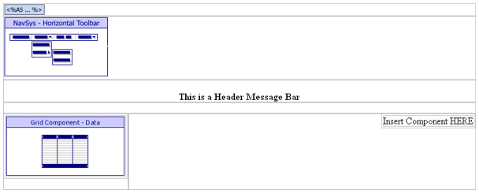

TEMPLATEPUBLIC.A5W
Purpose
We used TEMPLATEPUBLIC.A5W to simplify and speed the development process.
Description
TEMPLATEPUBLIC.A5W is a template page for the 'public' pages. TEMPLATEPUBLIC.A5W contains a main navigation, product navigation grid, and a login check to get current user values if needed. It does not include a custom search section, because it may be used on pages where a search in inappropriate. To add a body component, highlight the text 'Insert Page Component HERE' and select 'Insert Component'.
TEMPLATEPUBLIC.A5W contains the GRD_PRODNAV grid and NAV_MAIN navigation components.
Links
The Page Examples > Template Public entry of the NAV_INT navigation component calls the TEMPLATEPUBLIC.A5W page.

TEMPLATEPUBLIC.A5W in the WYSIWYG tab of the HTML Editor
Edits to the Page Source
When you look at TEMPLATEINT.A5W with the Source tab of the HTML Editor, you will see a large amount of HTML and Xbasic code. The HTML Editor placed almost all of it there automatically, as we used the WYSIWYG tab to place the tables, text, graphics, and components on the page. There are a few interesting exceptions, where we changed the page code through the Source tab.
The a5w_include("loggedinvalues.a5w") statement runs the code on the LOGGEDINVALUES.A5W page. This page creates and sets the values of session.protectedpUser.userid, session.protectedpUser.type, and session.protectedpUser.name.
|
a5w_include("loggedinvalues.a5w") |
Next, the code defines the welcome message for the current user. If no name was found for the current user, welcome is set to NULL. If a user name was found, the welcome message includes the session.protectedpUser.name.
|
if session.protectedpUser.name = "" welcome = "" ' welcome message for current user shown below product navigation list else welcome = "Welcome "+session.protectedpUser.name+"!" end if |
The location = "" statement clears any highlighted entries in the menu. The style_name = "shopcart" statement sets the style of the navigation component to match the page style.
|
with tmpl_NAV_MAIN location = "" 'could set current tab HERE style_name = "shopcart" 'could override style HERE componentName = "NAV_MAIN" end with |
This section of the code sets the style of the GRD_PRODNAV grid to match the page style.
|
with tmpl_GRD_PRODNAV style_name = "shopcart" 'could override style HERE componentName = "GRD_PRODNAV" end with |
Page Security Information
Always Allowed
See Also
Web Pages?